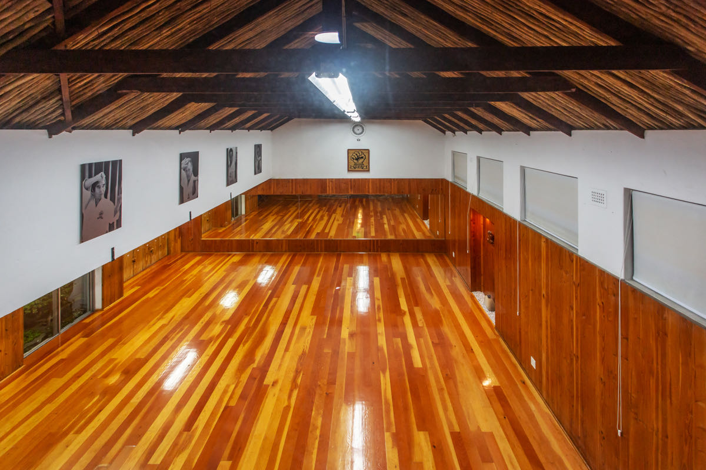
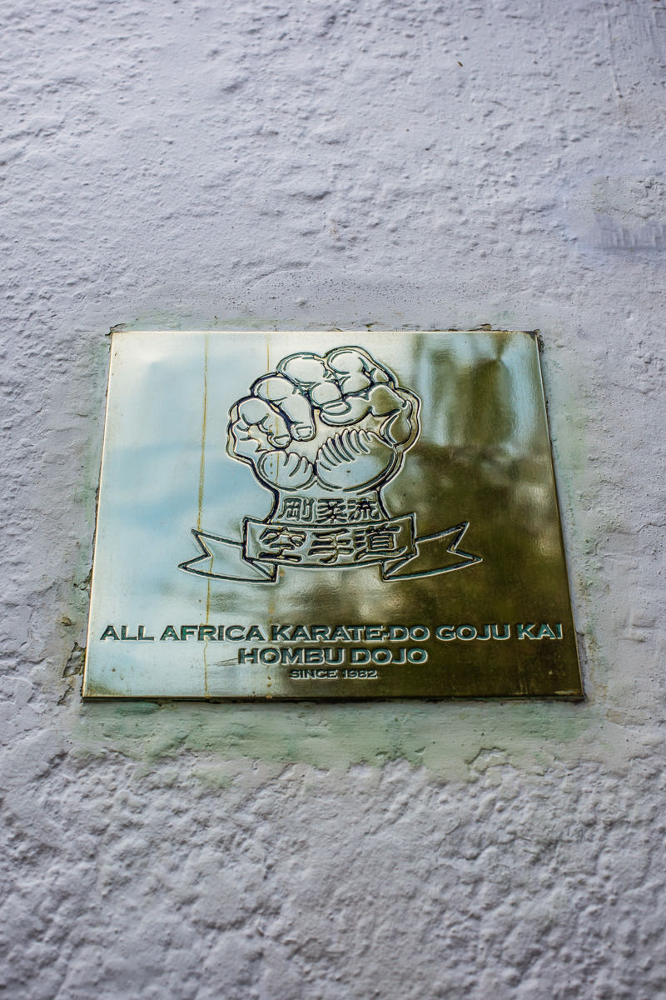
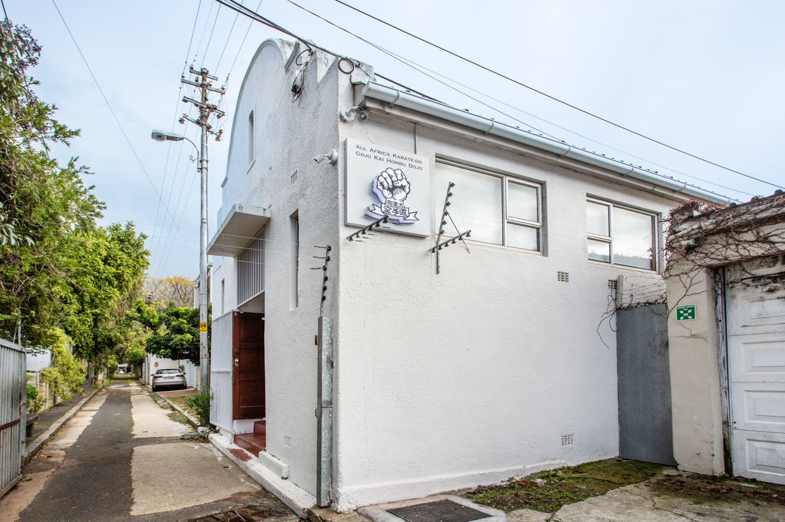
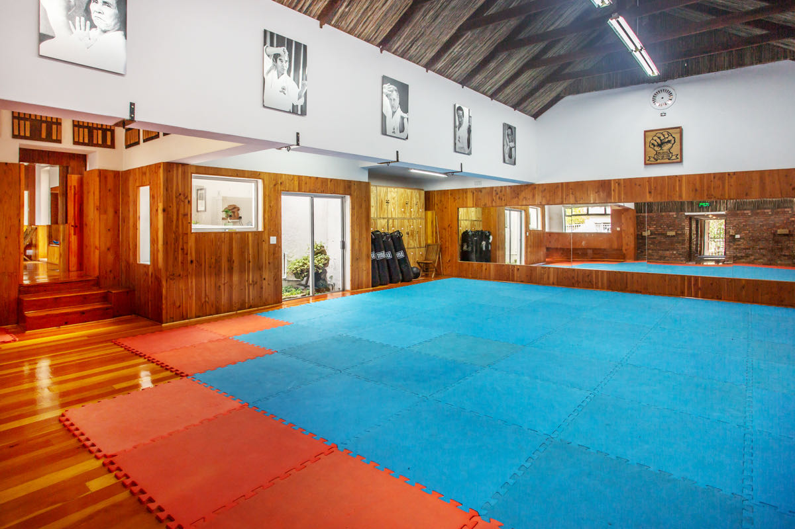
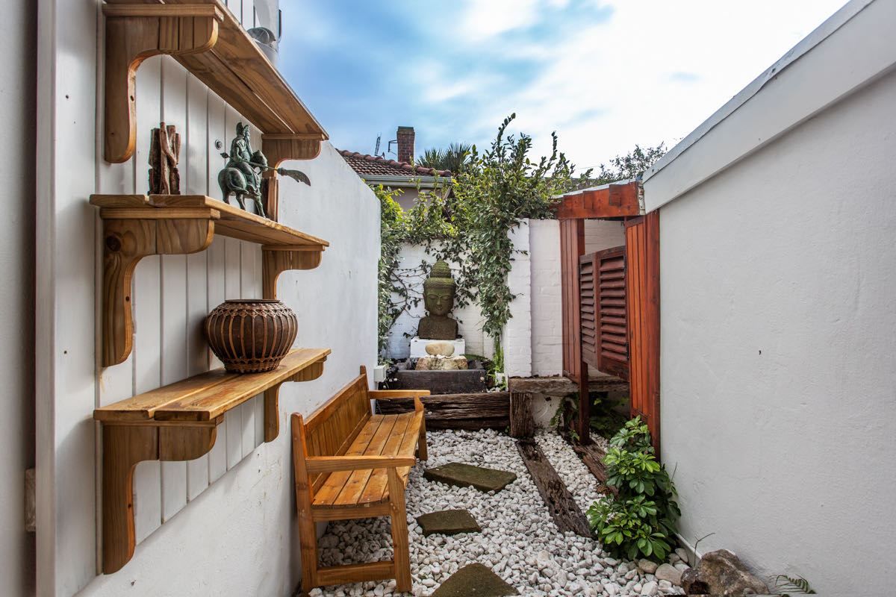
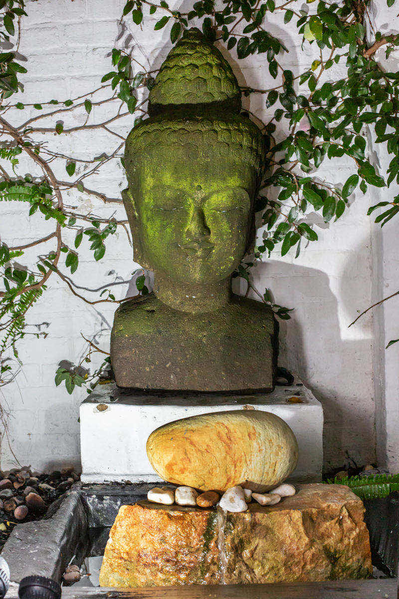
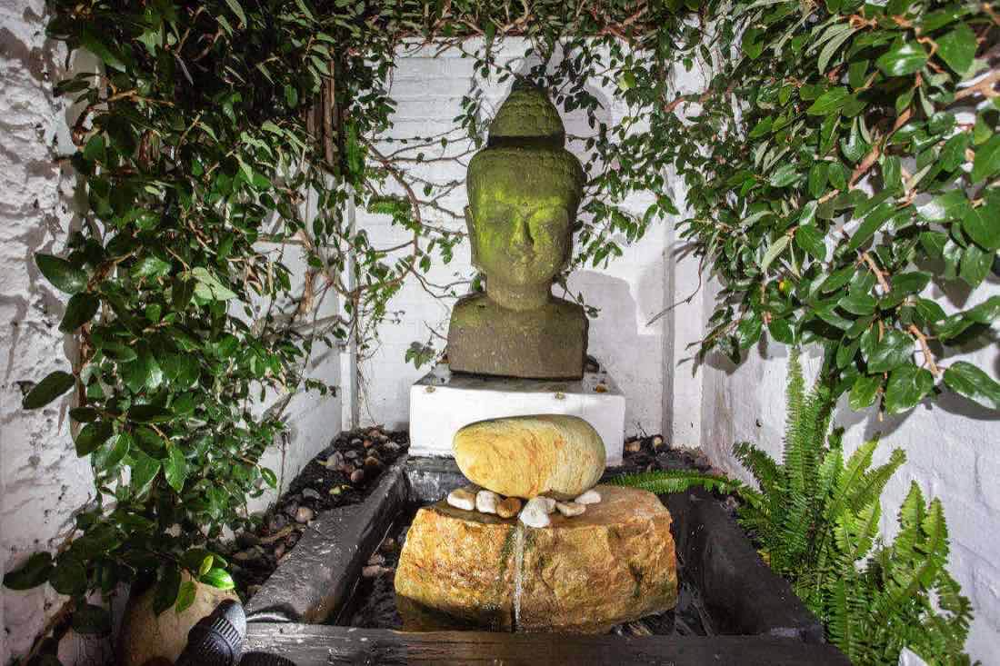
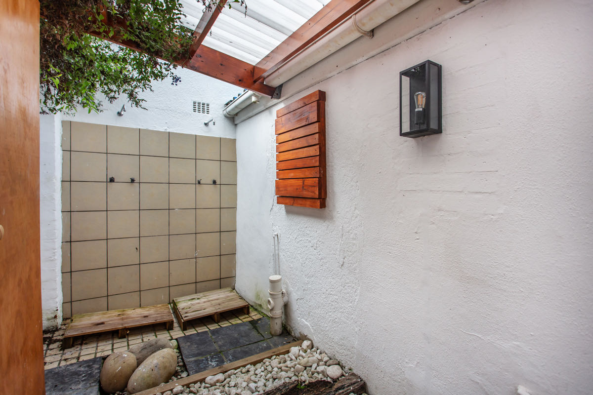

封闭小团
最多12人，同团同行。

ALL AFRICA KARATE-DO GOJU KAI HOMBU DOJO把接送、住宿和联络安排好，才能专心训练。
最多12人，同团同行。
每次接送均安排专车与司机。
抵达后由专人接机。
团体活动全程由当地向导陪同。
中文或英文，微信24小时可联系。
参营者须持有涵盖空手道训练的旅行及医疗保险；出发前我们会协助核对保单。
提前筛选住宿，行前提供安排。
行前说明紧急联络及处理流程。
这里是开普敦的全非洲刚柔会空手道本部道场，也是刚柔会／IKGA刚柔流空手道的非洲总部。四十余年来，道场培养了多位世界冠军。
种族隔离时期，老师们曾秘密向不同种族的学生授课，也走进城镇社区传授空手道。这份连接社区的初心，至今仍是道场故事的一部分。
刚柔流源自福建。来到开普敦，是沿着这份中国渊源，认识它在非洲延续的训练传统。



每日晨间由资深教练带领训练。围绕基本功、型与对练，在小团体中专注练习；课程按团队水平调整。完成训练营后颁发结业证书。
以下为训练日示例，具体时间及内容以最终安排为准。
训练后，在庭院慢下来。营期安排场内桑拿、冰浴与休息时间，让身体有空间恢复。




图片展示庭院与淋浴设施；桑拿及冰浴未在图中展示。
登高看山海，行程视天气调整。
沿海岸线，走向半岛尽头。
近距离观察企鹅，尊重野生动物。
离开城市，留宿一晚，感受野外。
示例行程。顺序会按天气、训练及团队安排调整。
接机、入住、行前说明。
晨练、道场介绍、庭院恢复。
晨练后探索桌山，视天气安排。
晨练、开普角与巨石滩企鹅。
晨练后出发Safari，留宿一晚。
每日晨练安排随Safari行程调整，返回后休息。
晨练、走访城镇社区空手道项目。
晨练、结业证书、告别与送机。
≈ US$2,800 · 不含机票
2027年7月（首选）或10月——6个名额完成预订后，确认团队日期。
教练带6名或以上学员参营，可免费同行。
国际机票、签证或入境授权费用、个人消费，以及须涵盖空手道训练的旅行及医疗保险。餐食范围及其他费用以最终书面报价为准。
每团最多12人。6个名额预订后确认成团日期。
成团确认前，定金可退。成团后的取消与退款条款，将在付款前书面提供。
支付定金预订付款链接待开通。请先通过下方联系人咨询名额。
微信扫码添加，咨询名额（在微信内长按二维码即可识别）
任何目的地都不能保证零风险。本团采用最多12人的封闭小团、全程专车、当地向导、机场迎接及24小时微信联络，并备有书面应急方案；参营者须持有涵盖训练的保险。请遵循向导建议，避免独自前往陌生区域。
香港特区、新加坡及马来西亚护照持有人短期访问南非通常免签；中国大陆护照持有人一般需办理南非电子旅行授权（ETA）或签证。请按护照及出行时的最新规定核实，我们会提供所需资料清单。签发由南非主管部门决定。
适合希望认真训练的空手道练习者与俱乐部团队。请报名时说明流派、级别与训练经历，方便教练安排。
可以咨询。初学者是否适合该团，需由教练根据团队水平及个人情况确认。
7月是开普敦冬季，白天约8–18°C，较凉且可能下雨；10月是春季，约11–22°C，较温和，但仍可能有风和阵雨。建议分层穿衣，备好防雨外套。户外活动视天气调整。
6个名额预订后才确认团队日期。确认前定金可退；若未成团，可选择退款或另议营期。具体处理时间与退款流程须在付款前书面确认。
欢迎俱乐部团队，单团最多12人。教练带6名或以上学员可免费同行。请先联系确认人数、教练名额计算方式与适合的营期。